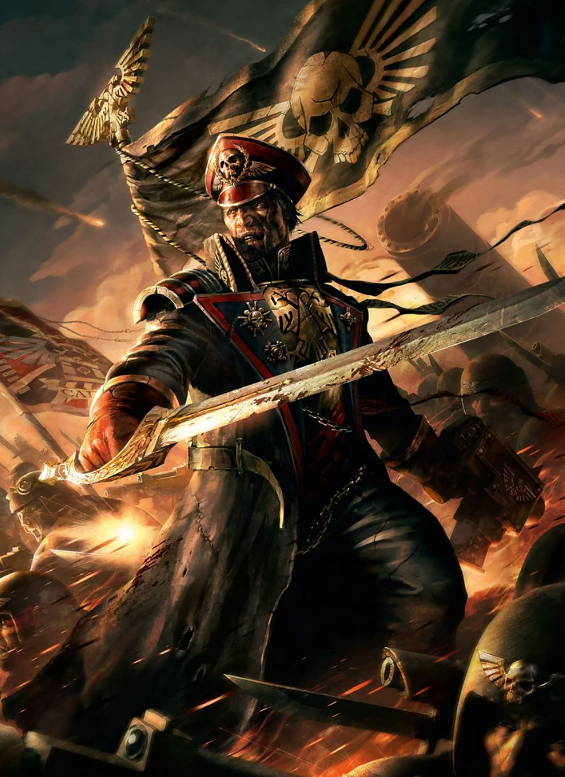

Dossier Officio Prefectus 503.M41
Les Commissaires ne sont pas simplement des officiers politiques. Ils sont la volonté de l’Imperium placée derrière chaque ligne de soldats.
Formés par le Schola Progenium, ils sont élevés dans une discipline absolue, nourris de doctrine impériale, et préparés à imposer l’ordre par tous les moyens nécessaires.

Leur rôle dépasse largement le commandement militaire classique. Ils surveillent le moral, répriment la lâcheté, détectent les signes d’hérésie, et rappellent constamment aux soldats que l’Empereur observe leurs actes.
La peur qu’ils inspirent est intentionnelle.
Un Commissaire peut exécuter un soldat pour désertion, insubordination, panique, ou contamination idéologique.
Cette autorité est presque absolue.
Pourtant, réduire les Commissaires à de simples bourreaux serait une erreur. Les plus respectés combattent en première ligne, partagent les souffrances des régiments, et deviennent parfois les seuls éléments empêchant une armée entière de s’effondrer.
Leur présence transforme la peur. Les soldats craignent l’ennemi. Mais ils craignent aussi le regard du Commissaire.
Entre ces deux terreurs, beaucoup continuent d’avancer.
Certains Commissaires deviennent des figures légendaires, capables d’inspirer un courage fanatique. D’autres sombrent dans la brutalité aveugle, transformant la discipline en simple oppression.
Mais tous servent la même fonction.
Maintenir l’Astra Militarum en état de guerre permanente.
Il faut comprendre ceci. Dans l’Imperium, la foi seule ne suffit pas toujours à faire tenir une ligne.
Parfois, il faut un homme derrière vous avec un pistolet bolter.
Fin de l’extrait. Toute interférence avec l’autorité d’un Commissaire constitue une infraction majeure au droit militaire impérial.